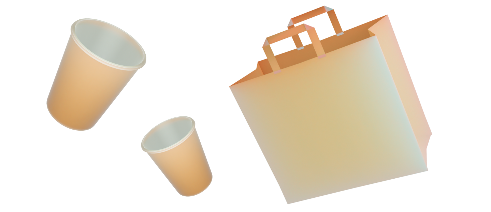
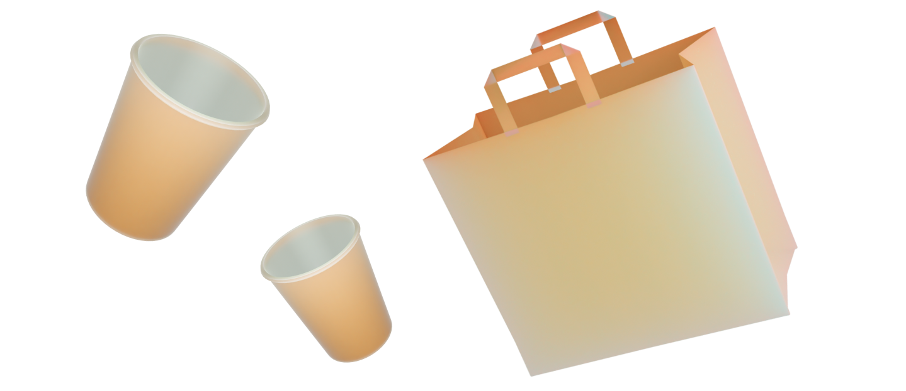

Что делать
с вещами
из картона?
с вещами
из картона?
 

Факты:
Название
Картон
Возможность переработки
Да
Использование
Частое
Важно!
*Переработка одной тонны картонных изделий позволяет сберечь до 17
деревьев и более 4000 киловатт-часов энергии.
Картон
Картон — это популярный материал, который используется
для упаковки различных товаров, однако, он имеет ряд негативных
свойств, которые могут привести к загрязнению окружающей среды.
Негативные свойства картона
Во-первых, большинство видов картона не являются
биоразлагаемыми, поэтому они могут оставаться в природе
в течение десятилетий. Во-вторых, производство картонных
изделий требует большого количества энергии и ресурсов,
что может негативно сказаться на окружающей среде.
Что с ним делать?
Переработка — картон можно перерабатывать и использовать
повторно для производства новых изделий.
Компостирование — биоразлагаемый картон можно использовать
в качестве удобрения для растений.
Использование в ремонте — картон может использоваться
в качестве временного защитного покрытия во время ремонтных
работ.
Использование в творческих проектах — картон может
использоваться в качестве материала для создания различных
художественных и рукодельных проектов.